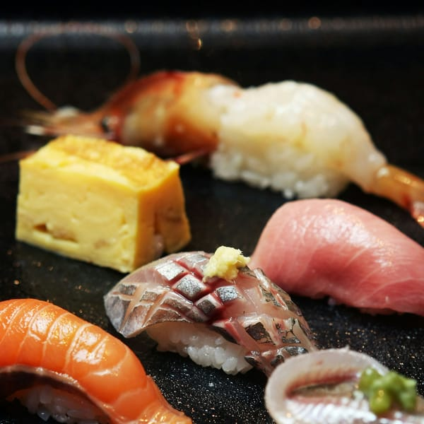

Why the rice gets as much care as the fish

Shari is the name for sushi rice. It is seasoned rice, shaped by hand, and it sits under every piece of nigiri we serve.
We make it fresh throughout service rather than in one big batch, so it reaches the counter at the right warmth for the fish on top. A cold piece of tuna on warm rice tastes different from the same piece on rice that has been waiting.
Nigiri on the à la carte menu comes two pieces to an order. Each is brushed lightly with nikiri, a soy-based glaze, or finished with a little salt, so you can eat it as it is, without dipping.